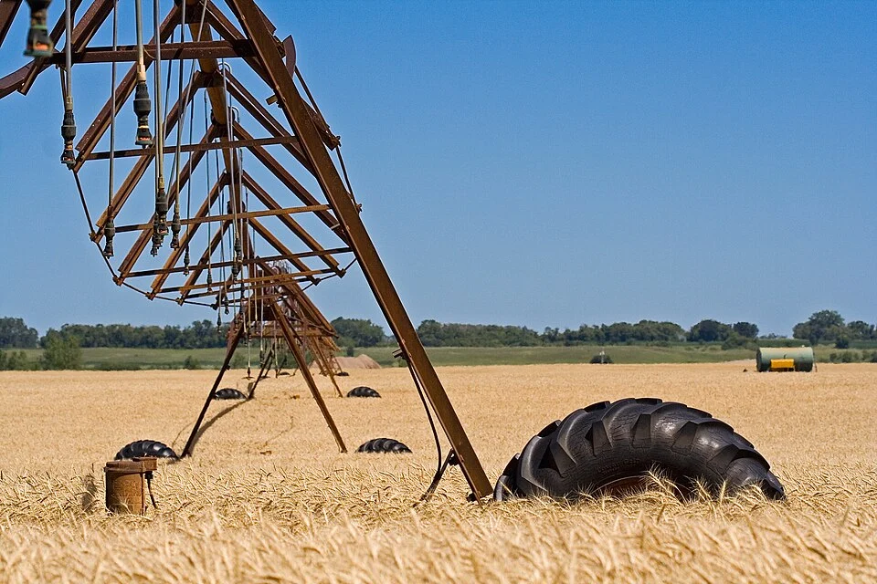

Dans Paix et guerre entre les nations (1962), le philosophe et sociologue Raymond Aron la définit comme « la capacité d'une unité politique d'imposer sa volonté aux autres » ou, à l'inverse, de ne pas se laisser imposer la volonté des autres.
Le juriste et politiste Serge Sur précise la distinction d'Aron entre capacité positive et capacité négative : la puissance est une quadruple capacité, celle de faire (le pouvoir), de faire faire (l'influence), d'empêcher de faire et de refuser de faire (l'indépendance).
🗺️ Atouts territoriaux
Superficie, terres arables, ressources naturelles, poids démographique.
🎖️ Atouts militaires
Le hard power : capacités militaires et surtout capacités de projection.
🏭 Atouts économiques
Richesse, insertion dans la mondialisation, secteurs industriel et technologique.
🎬 Atouts politiques et culturels
Le soft power : capacités diplomatiques et rayonnement culturel.
La réflexion est indissociable de l'exceptionnalisme américain. Les États-Unis se pensent à l'origine de la démocratie contemporaine et veulent étendre leur modèle au monde : c'est la « destinée manifeste », la city upon a hill (« cité sur la colline »).
♟️ Zbigniew Brzeziński
Le Grand Échiquier (1997) : une puissance sans pareille, seule capable d'organiser l'Eurasie à son profit.
🎭 Emmanuel Todd
Après l'empire (2002) : l'interventionnisme contre des puissances mineures, ce « micro-militarisme théâtral », est le signe d'une faiblesse.
⚔️ Christopher Caldwell
Pour l'essayiste, la guerre contre l'Iran officialiserait le déclin de l'empire américain.
L'historien britannique analyse les cycles des grandes puissances. Les États-Unis pourraient suivre le destin des anciens empires, victimes de la « surcharge impériale » (imperial overstretch), militaire et économique.
Le théoricien du système-monde voit l'hégémonie américaine en fin de cycle, du fait de la mondialisation et de la montée d'autres pôles.
Les États-Unis ne déclinent pas forcément, mais ils ne sont plus seuls au sommet : la « montée des autres » (Chine, Inde) ouvre un monde post-américain.
Après les enlisements irakien et afghan, les limites de l'unilatéralisme apparaissent : la supériorité militaire ne se convertit pas en résultats politiques.
Contre-thèse : l'ordre libéral international (prospérité, démocratie, paix relative) est le produit de la puissance américaine et s'effondrerait sans elle. Le déclin relève d'un choix politique, non d'une fatalité.
Un déclin culturel et symbolique : la question est moins de savoir si les États-Unis déclinent que ce que signifie passer de superpuissance à puissance de second rang. Comme le Royaume-Uni après 1945 : un retrait, pas un effondrement.
L'implosion de la Pax Americana commence avec la mondialisation, avant même la chute de l'URSS. Depuis la révolution iranienne (1979), les interventions américaines seraient des tentatives de reconquérir par la force une hégémonie perdue.
« Le déclinisme est consubstantiel à l'exceptionnalisme. » Dans le Vieux Monde, le déclin est pensé sur le modèle de Rome croulant sous les coups des barbares. Au Nouveau Monde, il est vécu, en écho à la guerre de Sécession, comme ne pouvant venir que de la discorde intérieure.
Protégés par leur isolement géographique, les Américains craignent moins l'ennemi que la décadence et la désintégration. D'où des poussées de fièvre nativiste ou maccarthyste, qui cherchent à « faire le ménage » au sein de la population.
Dès 1838, Abraham Lincoln affirmait que l'Amérique ne pourrait être détruite que par elle-même.
💥 Déclin absolu
Effondrement économique, politique, social ou militaire, comme celui de l'URSS.
📉 Déclin relatif
Perte d'influence face à la montée d'autres puissances (la Chine), sans effondrement interne.
🌫️ Déclin perçu
Le sentiment que la nation est « sur le déclin », même si les indicateurs sont ambigus.
Sa réponse est un « non » catégorique. Déjà, dans Bound to Lead (1990), il récusait l'« irrésistible » domination japonaise. Les États-Unis disposent d'atouts politiques, économiques, culturels et diplomatiques qui leur garantissent un leadership durable.
Ils sont concurrencés sur chacun de ces terrains, mais ils sont les seuls à pouvoir les revendiquer tous : d'où leur résilience et leur statut central.
Aucun rival ne cumule à la fois la puissance économique, militaire et le soft power.
Pour M. Azuelos, C. Tan et J.-B. Velut (« Splendeurs et misères du modèle compétitif américain »), le monde multipolaire et la montée de la Chine sont bien réels. Mais au-delà du rattrapage, la Chine n'a pas encore prouvé qu'elle pouvait devenir la nouvelle puissance innovante qu'ont été les États-Unis depuis plus d'un siècle : le monde n'est pas près de devenir post-américain.
Un territoire ne devient une ressource qu'à partir du moment où il est maîtrisé : d'où le rôle crucial des transports dans la construction du territoire américain.
Les grands ensembles se succèdent d'est en ouest : plaine côtière atlantique, Appalaches, Grandes Plaines, hautes terres de l'Ouest (Rocheuses, Grand Bassin), puis façade pacifique. Les trois façades, Atlantique, Pacifique et golfe du Mexique, sont un atout majeur d'ouverture sur le monde.
Le territoire se forme par la conquête de l'Ouest, par achat ou par annexion :
Achat de la Louisiane à la France de Bonaparte.
Achat de la Floride à l'Espagne.
Annexion du Texas.
Conquête de l'Ouest mexicain (Californie, Nouveau-Mexique…) après la guerre contre le Mexique.
Achat de l'Alaska à la Russie.
Théorisé par l'historien Frederick Jackson Turner en 1893 : un esprit pionnier inscrit dans la représentation collective, où le progrès semble inépuisable. La frontière intérieure est pourtant officiellement déclarée close en 1890.
Le territoire s'est formé dans la violence (guerres indiennes, déportations), et la nation aussi : guerre d'Indépendance, puis guerre de Sécession (1861-1865) entre Yankees et Confédérés, qui fait plus de 750 000 morts.
La colonisation de l'Ouest repose sur un partage égalitaire des terres, découpées en damier : c'est le système du township (Land Ordinance de 1785 : carrés de 6 milles de côté, subdivisés en sections), prolongé par le Homestead Act de 1862.
Ce modèle se veut égalitaire : la propriété privée y est indissociable de la démocratie, selon l'idéal jeffersonien du citoyen-agriculteur (yeoman farmer) qui fonde la nation.
Le réseau ferré américain est très dégradé. Au sens strict, il n'existe pas de train à grande vitesse : pour l'UIC (Union internationale des chemins de fer), la grande vitesse suppose une moyenne d'au moins 250 km/h.
Or l'Acela Express (Boston – New York – Washington) ne roule qu'à 99 km/h de moyenne entre New York et Boston, et à 136 km/h entre New York et Washington.
Elon Musk a de son côté proposé l'Hyperloop, une capsule dans un tube à basse pression : un projet plus médiatique que réalisé.
Vieux projet des années 1960, la California High-Speed Rail est actée par référendum en 2008 (Proposition 1A), qui autorise un emprunt de 9,95 milliards de dollars. Elle prévoit 1 200 km de ligne à 350 km/h entre San Francisco et Los Angeles, puis jusqu'à Sacramento et San Diego : 2 h 40 de trajet contre 7 à 9 heures. Le tracé par la Vallée centrale doit désenclaver l'intérieur agricole, mais suscite de vives oppositions (expropriations). Lancé en 2015, le chantier voit son coût exploser : les premiers trains sont espérés vers 2030.
Les transports restent inégalement denses : ils se concentrent dans le Nord-Est et en Californie, avec Chicago comme grande plaque tournante ferroviaire et routière. Les densités diminuent fortement vers l'intérieur et l'Ouest.
Née en Amérique du Nord, la notion désigne l'« état sauvage », ou plus précisément la « nature sauvage » : d'où l'usage du féminin en français. Elle est consacrée juridiquement par le Wilderness Act de 1964.
Les premiers colons sont confrontés à une nature sauvage qu'il faut maîtriser. Domine alors un rapport extractiviste, de domination et d'exploitation : il détruit la faune sauvage, comme le bison, presque exterminé en même temps que les populations autochtones.
Mais la nature est aussi idéalisée. Pour le transcendantalisme de Ralph Waldo Emerson et Henry David Thoreau, elle est une œuvre divine : s'en rapprocher, c'est se rapprocher de Dieu.
Thoreau, qui vécut deux ans seul au bord de l'étang de Walden (Walden ou la vie dans les bois, 1854), fonde une tradition de pensée écologiste et antimatérialiste très influente.
On met désormais la ville dans la nature (comme à Los Angeles) et non plus la nature dans la ville (comme avec Central Park, à New York).
D'où une politique de préservation : Yellowstone devient en 1872 le premier parc national au monde, avant le Grand Canyon ou Yosemite. Le National Park Service est créé en 1916.
La géographe Gabrielle Saumon montre que le Montana nourrit un fantasme de la wilderness et constitue un haut lieu des migrations d'aménités dans les Rocheuses. Deux éléments attirent les nouveaux résidents :
- Les sports de pleine nature : ski, VTT, rafting, kayak.
- La faune sauvage : croiser un élan, un bison, et plus encore un ours noir ou un grizzly, c'est rencontrer la nature sauvage.
Les récits littéraires et le cinéma continuent d'inscrire ce fantasme au cœur des imaginaires collectifs.
Une nouvelle ruée vers l'Ouest, dont les aménités environnementales sont le nouveau filon. Dans les Rocheuses, cette recomposition est telle qu'elle a fait naître un nouveau toponyme : on passe de l'Old West au New West (Bryson et Wyckoff, 2010 ; Hines, 2012).
🤠 Old West
Des activités extractives : ranchs, mines, filière bois. On produit et l'on consomme des ressources : une économie extractive.
🏔️ New West
Sports de nature, observation de la faune, parcs nationaux. On produit et l'on consomme des expériences : une économie récréative et de service.
La migration est à la fois sociale et paysagère : les nouveaux venus ont un niveau d'éducation et des revenus plus élevés que les habitants installés, et cherchent à préserver le paysage.
Les amenity ranches en sont l'objet emblématique. Nourris d'une culture populaire qui idéalise le cow-boy et séduits par la « ranchisation » de célébrités et de capitaines d'industrie, les amenity ranchers viennent vivre la vie du ranch pour ses aménités.
Arrivée dans les campagnes de populations mieux dotées en capital économique, culturel et social que les habitants déjà installés. Dans l'ouest du Montana étudié par Gabrielle Saumon (2025), ce sont souvent des Californiens : on parle de « californication ». Elle entraîne une hausse du coût de la vie et des formes d'exclusion : pression foncière, entre-soi, mutations paysagères. On parle d'un New West en archipel.
Les États-Unis sont le premier pays au monde pour les recettes touristiques. Les hauts lieux sont les grandes métropoles (New York, Miami, Los Angeles), les parcs naturels, les parcs d'attractions (le Walt Disney World Resort d'Orlando accueille environ 60 millions de visiteurs par an) et les espaces de jeu.
Las Vegas est la capitale mondiale du jeu. Le Nevada, État du Far West pionnier, est le premier à légaliser les jeux d'argent, en 1931.
Il garde un monopole de près de 50 ans, qui fonde son modèle économique. Le jeu ne gagne le reste du pays qu'en 1978, avec Atlantic City (New Jersey), la « Las Vegas de la côte Est ».
Le Strip met en scène de grandes réalisations pastiches : Paris et sa tour Eiffel, le Venetian…
Les États-Unis sont l'une des plus grandes puissances agricoles du monde. Leur immense territoire offre une variété de climats, donc de productions. Environ 3,6 millions de km² de surface agricole utile, notamment dans les Grandes Plaines, permettent une forte mécanisation.

L'agriculture est traditionnellement organisée en belts, des ceintures spécialisées : Corn Belt, Wheat Belt, Cotton Belt, Dairy Belt… Cette spécialisation régionale tend aujourd'hui à se diversifier.
La production est très concentrée entre les mains des grandes exploitations, familiales ou corporate farms : 10 % des exploitations assurent 75 % de la production et 85 % des revenus agricoles.
Capacité d'un État, d'un groupe d'États ou de grandes entreprises à imposer leur domination en usant de moyens de pression dans le domaine agroalimentaire. Le terme revient à Earl Butz, secrétaire à l'Agriculture de Nixon, en pleine guerre froide (« US Food Power : Ultimate Weapon in World Politics », Business Week, 1975).
Pendant la guerre froide, le blé sert l'endiguement de l'Union soviétique :
Aujourd'hui, les États-Unis sont le 2e exportateur mondial de produits agricoles derrière l'Union européenne (176 Md$ en 2021 contre 232 Md$). Ils occupent le 1er ou le 2e rang pour les grandes cultures (maïs, soja, blé, coton) et fournissent environ un quart du marché mondial de la viande de porc et de volaille.
La filière agro-industrielle est contrôlée par quelques grands groupes en position dominante sur le marché mondial : PepsiCo (boissons), Archer Daniels Midland et Cargill (transformation des matières premières), Tyson Foods (viande).
Dix grandes compagnies contrôlent une très large part de l'alimentation mondiale (environ 472 marques, selon la campagne Behind the Brands d'Oxfam) : Nestlé, PepsiCo, Coca-Cola, Unilever, Danone, Mondelez, Mars, Kellogg's, General Mills et Associated British Foods. Plusieurs des plus grands sont donc européens.
💵 Soutien et dépendance
Un soutien public massif (Farm Bills, subventions) et une forte dépendance aux cours mondiaux : la filière est exposée aux guerres commerciales (embargos chinois sur le soja).
🌾 Concurrence et environnement
Une concurrence croissante (UE, Brésil, Russie, Chine) et de lourds problèmes environnementaux : épuisement de l'aquifère d'Ogallala, érosion, intrants, mémoire du Dust Bowl.
« L'Amérique est pleine aux as. »Donald Trump, à propos des ressources énergétiques du pays
En 2020, le pétrole (34 %) et le gaz (35 %) dominent la consommation d'énergie, loin devant le charbon en déclin (8,7 %), le nucléaire en difficulté (9 %) et des renouvelables encore limités.
La production s'envole (pétrole × 55, gaz × 171) grâce aux gisements conventionnels du Texas, de Californie et d'Oklahoma.
La production décline et le pays importe de plus en plus, notamment du Moyen-Orient : la dépendance énergétique passe de 5 % en 1960 à 30 % en 2006. D'où l'exploitation de champs difficiles d'accès : Prudhoe Bay (Alaska), golfe du Mexique.
Une innovation de rupture, le gaz et le pétrole de schiste (fracturation hydraulique, forage horizontal). De 2009 à 2021, la production de pétrole est multipliée par 2,2 et celle de gaz augmente de 71 %. Les hydrocarbures non conventionnels fournissent plus de 60 % du pétrole et 70 % du gaz du pays.
Le bassin permien (Texas – Nouveau-Mexique) illustre ces mutations : bassins d'eau pour la fracturation, champs pétroliers géométriques et hiérarchisés, comme le Wasson Oil Field autour de Denver City (Texas).
Les puits s'alignent en gigantesques grappes, reliés par une trame dense de pistes. Le contraste avec les champs circulaires irrigués par pivot est saisissant : l'agriculture cède la place à la production énergétique.
C'est un cycle aussi bouleversant que lorsque l'agriculture avait remplacé l'élevage extensif au XIXe siècle.
Seuls quatre États assurent 79 % de la production nationale de pétrole en 2021. Cette dynamique renforce le poids politique et économique du South Central (Texas, Nouveau-Mexique, Oklahoma, Louisiane), largement conservateur et républicain.
Des ressources sont redevenues stratégiques dans la rivalité de puissance : lithium, cuivre, nickel, cobalt, terres rares, graphite… Elles sont indispensables aux batteries, aux réseaux électriques, aux semi-conducteurs et aux armements. En 2025, les États-Unis ajoutent 10 minerais à leur liste des matières critiques, dont le cuivre, l'uranium et le phosphate.
17 éléments : les 15 lanthanides (néodyme, praséodyme, dysprosium, lutécium…), plus l'yttrium et le scandium. Ce ne sont ni des terres ni des éléments rares : ce sont les difficultés d'extraction et de raffinage qui les rendent rares et très polluantes à produire. Il faut ainsi traiter 1 200 tonnes de roche pour obtenir 1 kg de lutécium. On parle aussi de métaux stratégiques.
Quatre secteurs les utilisent : le numérique (téléphones, écrans), l'énergie (éoliennes, moteurs électriques, batteries), le médical et l'armement. Chaque appareil n'en contient qu'une quantité infime, mais l'explosion du nombre d'appareils fait bondir la demande depuis les années 2010.
Longtemps détestées parce que polluantes, les mines reviennent en grâce. Dès 2017, Donald Trump invoque la sécurité nationale pour favoriser la production de terres rares ; Joe Biden, apôtre du « made in America », poursuit cette politique.
MP Materials, seul producteur américain de terres rares (mine de Mountain Pass, Californie), reçoit environ 45 millions de dollars du département de la Défense.
La société envoyait encore ses minerais (15 % de la production mondiale, soit 42 000 tonnes) en Chine pour y être raffinés. Un programme de 700 millions de dollars vise à franchir deux étapes : le raffinage sur place du néodyme-praséodyme, puis une usine d'aimants à Fort Worth (Texas), qui doit produire 1 000 tonnes par an et permettre à General Motors de fabriquer 500 000 moteurs électriques. En juillet 2025, le Pentagone devient le premier actionnaire de MP Materials : une forme d'« État stratège » minier.
En février 2022, Joe Biden résume l'enjeu : impossible de bâtir un futur made in America en dépendant de la Chine pour les matériaux des produits d'aujourd'hui et de demain.
Les États-Unis ont pris un retard considérable. Le lithium vient surtout d'Australie (49 %), du Chili (22 %), de Chine (17 %) et d'Argentine (8 %). Avec environ 10 % des réserves mondiales, le pays ne compte qu'une mine en activité, à Silver Peak (Nevada), qui ne fournit que 5 000 tonnes par an.
Même retard pour les batteries : la Chine abritait 107 des 142 usines mondiales de batteries lithium-ion, les États-Unis neuf seulement.
La Salton Sea pourrait devenir une « Lithium Valley ». À environ 70 m sous le niveau de la mer, ce lac salé du sud-est de la Californie s'étend entre Palm Springs (capitale mondiale du golf) et Brawley (ouvriers agricoles, 85 % de Latinos).
Ses saumures géothermales recèlent d'importantes ressources de lithium. L'Imperial Valley voisine, devenue le potager de l'Amérique (laitues, asperges, melons), est aujourd'hui une des terres promises de la lutte pour le climat.
La caldeira de Thacker Pass recèlerait le plus grand gisement de lithium d'Amérique du Nord. L'entreprise canadienne Lithium Americas y prévoit une mine à ciel ouvert de 520 hectares, une usine d'acide sulfurique et une exploitation sur 46 ans, consommant des millions de litres d'eau par jour. À plein régime, elle pourrait alimenter un million de voitures électriques par an. Le paradoxe : le site risque d'être sacrifié au nom de la transition énergétique. Le projet se heurte aux éleveurs, aux défenseurs de l'environnement et à des tribus paiutes et shoshones, pour qui le lieu est sacré : l'armée y massacra des Paiutes en 1865.
Sécuriser les approvisionnements en minerais critiques face à la Chine est devenu un enjeu de sécurité nationale et un levier de réindustrialisation. Longtemps pensé comme réservoir agricole et énergétique, le territoire américain redevient une ressource minière stratégique.
Devise historique des États-Unis, adoptée en 1782 et toujours inscrite sur le Grand Sceau et les pièces. La devise officielle est pourtant, depuis 1956, In God We Trust.
La densité moyenne (environ 36 hab./km²) dit peu de chose, tant les contrastes sont vigoureux : à peine 2 hab./km² dans le Wyoming ou le Montana, près de 490 hab./km² dans le New Jersey.
La répartition obéit à une triple opposition : Est/Ouest, littoral/intérieur, villes/campagnes. Le Nord-Est concentre toujours l'essentiel de la population, mais le point d'équilibre se déplace sans cesse vers l'Ouest et le Sud, avec la croissance de la Sun Belt.
Le Nord-Est est la région la plus peuplée et la plus urbanisée, celle où sont arrivés les premiers migrants. Elle compte trois ensembles : la Megalopolis, la région de Pittsburgh (nord des Appalaches, vieux « pays noir » en reconversion) et la rive sud des Grands Lacs.
Cette dernière forme une véritable « Main Street » industrielle, du canal Érié jusqu'à Détroit puis Chicago, remarquable carrefour.
Terme forgé par le géographe français Jean Gottmann (Megalopolis. The Urbanized Northeastern Seaboard of the United States) pour désigner l'ensemble urbain du Nord-Est, étiré sur 800 km de Boston à Washington. Des villes d'envergure internationale y sont si proches qu'elles tendent à former une seule unité urbaine : plus de 50 millions d'habitants, environ 17 % de la population sur moins de 2 % du territoire, avec New York, Philadelphie, Washington, Boston et Baltimore.
La croissance a été spectaculaire sur le long terme. En 1790, la population se regroupe entre l'Atlantique et les Appalaches, et Philadelphie est la première ville. Aujourd'hui, les États-Unis sont 3e derrière l'Inde et la Chine, grâce à une immigration soutenue et à un fort accroissement naturel.
Mais de 2010 à 2020, la population n'augmente que de 7,4 % : la deuxième plus faible hausse depuis le premier recensement de 1790. Contrairement au ralentissement conjoncturel de la Grande Dépression, il s'agit d'un déclin de long terme.
La population est urbaine à 83 %. Une métropolisation ancienne et un puissant étalement urbain (urban sprawl) organisent les villes autour d'un centre-ville (downtown), de vastes banlieues résidentielles (suburbs), puis d'espaces périurbains et d'exurbs.
Dans The City (1925), Robert Park, Ernest Burgess et Roderick McKenzie font de la ville un laboratoire : sa croissance s'organise en aires concentriques, où la mobilité sociale se traduit par une mobilité résidentielle du centre vers les périphéries.
L'essor de l'automobile, du pavillonnaire et des routes accélère l'étalement.
Les classes moyennes et aisées blanches fuient les villes-centres, qui connaissent déclin démographique, désindustrialisation et paupérisation.
Les centres renaissent : réhabilitation, retour des classes aisées, verticalisation et gentrification. Dans le même temps, les minorités gagnent les banlieues (black flight) : la ségrégation résidentielle recule, mais se recompose à l'échelle métropolitaine.
La mobilité est un phénomène ancien, qui a façonné l'identité collective : héritage d'une société d'immigrants et de l'esprit pionnier. La frontière intérieure disparaît en 1890, mais le mythe de la Frontier reste ancré.
Cette mobilité demeure importante, même si elle diminue : chaque année, moins d'un Américain sur dix change de logement, deux fois moins que dans les années 1960. Un tiers des Américains vivent loin de leur lieu de naissance.
Cette mobilité soutient la flexibilité du marché du travail et la redistribution de la population et des activités. Elle touche des profils très divers, comme le montre le film Nomadland de Chloé Zhao (2021) : une sexagénaire vit dans son van et enchaîne les emplois précaires dans l'Ouest après la fermeture de son usine.
🚂 La Great Migration (1910-1970)
Environ 6 millions d'Afro-Américains quittent le Sud pour les grandes villes du Nord et de l'Ouest. Neuf sur dix vivaient dans le Sud au début du XXe siècle, 53 % seulement en 1970.
🔁 Le Black Migration Reversal
Dès les années 1970, le mouvement s'inverse : le Sud cesse d'être une région d'émigration nette pour les populations noires et devient une région d'attraction, notamment la Floride et le Texas.
Les flux internes reflètent les différences de dynamisme économique, d'emploi et d'attractivité :
🏭 Le Nord-Est et la Rust Belt
Longtemps espaces de départ, avec le déclin de la Manufacturing Belt, devenue Rust Belt. Pas de déclin généralisé pour autant : en 2024, le Nord-Est gagne environ 435 000 habitants grâce à l'immigration internationale, malgré une perte nette de 192 000 par migration interne.
☀️ La Sun Belt
Très attractive : dynamisme économique, essor des métropoles et aménités climatiques (héliotropisme). La Floride en est l'exemple, avec un fort vieillissement. À nuancer : les soldes migratoires y sont moins favorables qu'au début des années 2000.
Tous les dix ans, les résultats du recensement servent à répartir les 435 sièges de la Chambre des représentants entre les États selon leur population. Cette opération déplace le poids politique entre les territoires.
Le recensement de 2020 confirme le glissement vers le Sud et l'Ouest : le Texas gagne 2 sièges ; la Californie, New York et cinq autres États en perdent un. La Californie est emblématique : malgré 2,3 millions d'habitants de plus (+6,1 %), elle perd un siège, car sa croissance a été moins rapide que celle d'autres États.
Au total, les États du Sud (majoritairement républicains) et de l'Ouest gagnent des sièges au détriment du Nord-Est et du Midwest (plutôt démocrates). L'élection présidentielle s'en ressent, puisque le nombre de sièges fixe celui des grands électeurs.
Le président et le vice-président sont élus pour 4 ans par un Collège électoral de 538 grands électeurs : 100 sénateurs + 435 représentants + 3 pour le district de Columbia. Il faut la majorité absolue, soit 270. Ce collège éphémère a été voulu par les constituants de 1787 pour empêcher la confiscation du pouvoir par un groupe.
Dans cette fédération, les voix sont décomptées État par État ; Washington ne fixe que le nombre de grands électeurs et le calendrier (premier mardi de novembre). Chaque État a 2 sénateurs, quel que soit son poids, plus ses représentants, proportionnels à sa population.
On peut être élu sans la majorité du vote populaire, comme Donald Trump en 2016 (près de 3 millions de voix de moins qu'Hillary Clinton). D'abord parce que les petits États sont surreprésentés : un grand électeur pèse environ 190 000 habitants dans le Wyoming, plus de 700 000 en Californie. Ensuite à cause du winner-take-all : le candidat arrivé en tête dans un État rafle tous ses grands électeurs (sauf dans le Maine et le Nebraska).
En 2024, Donald Trump remporte la Pennsylvanie avec 50,4 % des voix contre 48,7 % à Kamala Harris, mais rafle ses 19 grands électeurs. C'est ce qu'Alexis de Tocqueville appelait la « tyrannie de la majorité », dérive possible d'une démocratie dont il faisait, dans De la démocratie en Amérique (1835-1840), reposer le principe sur l'« égalité des conditions » : non pas l'égalité des situations économiques, mais celle des droits, des chances et de la considération.
De grandes divisions régionales relativement stables… La plupart des États sont non compétitifs : la Californie vote démocrate depuis 1992, le Texas républicain depuis 1980.
🐘 Le Parti républicain
Il domine le Sud (les energy states : Texas, Floride, anciens États confédérés) et le Midwest, avec une base rurale, blanche et conservatrice.
Le Parti démocrate
Il domine les États peuplés et urbanisés des deux côtes, les grandes villes et la région des Grands Lacs, de tradition syndicale : c'est le Democratic Blue Wall.
Les grands électeurs et le winner-take-all amplifient ces tendances, en favorisant les États peu peuplés, plutôt républicains. Donald Trump a ainsi failli être réélu en 2020 alors qu'il accusait un retard de 7 millions de voix sur Joe Biden.
… et quelques États décisifs, les swing states. Le vote y est indécis : ils peuvent changer de camp d'un scrutin à l'autre et faire basculer le résultat, d'autant plus qu'ils comptent de grands électeurs.
🏙️ Un réseau démocrate
Les métropoles et leurs premières franges votent démocrate à 60-70 % et plus (record : Washington DC, plus de 90 % en 2024). Une centaine de métropoles reliées par d'intenses circulations d'hommes, d'objets et d'idées.
🌾 Une nappe républicaine
Peu dense mais continue, elle englobe les franges des aires urbaines (suburbs périphériques et exurbs), les petites villes et les campagnes.
Selon Jacques Lévy et son équipe, la couleur politique d'un État dépend largement du poids de ses métropoles. Même dans les États « rouges », les grandes villes sont des îlots démocrates : au Texas, Houston, Dallas, Austin et San Antonio votent Harris en 2024, alors que Trump remporte l'État avec 56 % des voix. Dans le Sud profond, Atlanta, La Nouvelle-Orléans, Birmingham ou Jackson restent démocrates.
Différences de localisation entre grandes et petites villes, et entre centre, banlieue (suburbs), périurbain (exurbs) et campagne. Depuis 2000, elles jouent un rôle croissant dans la distribution des votes entre républicains et démocrates.
Ce clivage affaiblit les anciennes divisions régionales : les fiefs républicains du Sud s'effritent, tandis que l'emprise démocrate sur les Grands Lacs s'affaisse. La métropolisation annoncerait-elle la victoire ultime des démocrates, comme le suggère l'équipe de Jacques Lévy ?
Le retournement de la Géorgie et de l'Arizona en 2020 ne se comprend pas sans ces mutations démographiques liées à l'urbanisation.
Un clivage à nuancer :
- En valeur absolue, la plupart des électeurs de Trump vivent aussi dans les métropoles : minoritaires, ils y sont si nombreux qu'ils dépassent le total des zones rurales.
- Les centres acquis aux démocrates ne regroupent pas la majorité des urbains, concentrés à 55 % dans les suburbs, où le vote est beaucoup plus disputé.
- Les clivages régionaux restent prégnants dans ce pays fédéral : les votes locaux diffèrent souvent du vote présidentiel, et un républicain californien est bien plus libéral sur les mœurs qu'un démocrate du Sud. D'où la nécessité de changer d'échelle.
Des migrants surtout britanniques, irlandais, allemands et néerlandais, de différentes confessions chrétiennes : c'est l'Old Immigration (Europe du Nord et de l'Ouest).
Le peuplement repose aussi sur la déportation et la mise en esclavage de millions d'Africains. La traite transatlantique est interdite en 1808, mais l'esclavage et la traite intérieure durent jusqu'à l'abolition de 1865.
Des flux massifs d'Europe du Sud et de l'Est (Italiens, Polonais, Russes, populations juives) : près de 23,5 millions d'immigrants de 1881 à 1920, main-d'œuvre de l'industrialisation. Le terme de melting pot, popularisé par la pièce d'Israel Zangwill (1908), exprime l'idéal d'une fusion ; le nativisme monte pourtant.
Les lois de 1921 et 1924 instaurent des quotas par origines nationales, défavorables à l'Europe du Sud et de l'Est. Celle de 1924 exclut les Asiatiques (les Chinois l'étaient déjà par le Chinese Exclusion Act de 1882). La crise des années 1930 réduit encore les flux.
L'Immigration and Nationality Act abolit les quotas : les migrants viennent désormais surtout d'Amérique latine et d'Asie. Après le 11 septembre 2001, les restrictions se renforcent. Obama procède à plus de 2,5 millions d'expulsions en huit ans ; Trump fait du mur et des expulsions massives (600 000 en 2025, selon son gouvernement) le leitmotiv de sa politique.
L'attractivité migratoire est mondiale : travailleurs peu qualifiés, mais aussi étudiants, entrepreneurs et travailleurs hautement qualifiés, au cœur du brain drain.
L'immigration irrégulière (environ 4 % de la population) recouvre des situations administratives diverses, pas seulement des franchissements clandestins. Parmi ces personnes, les Dreamers, arrivés enfants, ont grandi, étudié et travaillé dans le pays sans statut permanent : leur sort est au cœur des débats sur la régularisation.
🫕 Le melting pot
L'idée que les cultures migrantes fusionneraient dans un creuset commun (assimilation) reste un mythe, ou un idéal. L'idée de nation des Pères fondateurs garde pourtant sa force, portée par un patriotisme qui transcende les origines.
🥗 Le salad bowl
Les immigrants conservent leur identité d'origine tout en s'insérant dans la société. Pas de reconnaissance officielle du multiculturalisme (à la différence du Canada), mais des mesures comme la discrimination positive (affirmative action).
En 2023, la Cour suprême a mis fin à la prise en compte de la race dans les admissions universitaires.
Une géographie contrastée. L'Amérique des minorités se concentre sur les côtes (les Asiatiques font 15 % de la population de la Californie), dans les États frontaliers du Mexique (près de la moitié d'Hispaniques au Nouveau-Mexique) et dans le Vieux Sud (38 % d'Afro-Américains dans le Mississippi). L'Amérique blanche domine près du Canada (Maine, Idaho), dans les Grandes Plaines, les Rocheuses et les Appalaches.
Depuis les années 1990, la transformation de la composition ethno-raciale inquiète une partie de la population blanche non hispanique. L'immigration est devenue un enjeu politique majeur, surtout depuis 2016 (Trump accusant les Mexicains d'être des « violeurs » et des « criminels »).
Une partie des WASP cède à des relents nativistes, xénophobes, voire suprémacistes, par crainte de passer de la majorité absolue à une majorité relative (vers 2045-2060 selon les projections). Samuel Huntington s'inquiétait déjà de l'immigration latino-américaine dans Who Are We ? (2004).
Mais il faut nuancer : les Hispaniques ne forment pas un groupe homogène. Les Mexicains sont majoritaires, mais les Cubains, Portoricains, Salvadoriens, Dominicains ou Colombiens ont d'autres trajectoires, y compris politiques (les Cubains de Floride votent plutôt républicain). Leur répartition est très inégale : Sud-Ouest, Californie, Texas, Floride.
L'appartenance revendiquée, mais aussi l'assignation à une catégorie ethnique ou raciale, donnent une existence sociale à des identités souvent fluides et plurielles. L'élection de Barack Obama en 2008, premier président noir, en est un symbole fort.
Territoire où la somme des minorités dépasse la population blanche non hispanique, qui n'y est donc plus majoritaire. Ce n'est pas pour autant une nouvelle majorité homogène : ces populations ont des origines, des trajectoires et des pratiques très différentes.
Parler d'une « Amérique post-ethnique » serait pourtant excessif. Le pouvoir reste largement aux mains de la majorité blanche chrétienne, et les catégories raciales structurent toujours les inégalités sociales, les trajectoires résidentielles, les pratiques politiques et les discriminations.
Le recul de la majorité blanche ne signifie donc pas la disparition des appartenances : la société passe d'une majorité démographique dominante à une société de plus en plus pluralisée, où plusieurs appartenances coexistent et s'entrecroisent.
Les États-Unis ont la structure d'une économie développée très tertiarisée : 1 % des emplois dans le primaire, 15 à 20 % dans le secondaire, plus de 80 % dans le tertiaire (santé, éducation, services aux entreprises, technologies). La désindustrialisation a réduit le poids de l'industrie, qui reste pourtant importante.
Le marché du travail est dynamique. Depuis les années 1990, la croissance du PIB est en moyenne deux fois supérieure à celle de l'Europe, et l'économie a longtemps créé 150 000 à 200 000 emplois par mois : les États-Unis sont le pays du plein-emploi, une véritable job machine.
Mais ce marché est profondément dual, avec une double logique de compétitivité :
🎓 Par le haut
Une main-d'œuvre très qualifiée, une forte productivité et l'innovation. Le brain drain (ingénieurs, chercheurs, médecins, entrepreneurs) alimente les clusters de la Silicon Valley, de Boston ou de Seattle, grâce aux universités et aux visas H-1B. En 2025, un droit de 100 000 $ sur les nouveaux visas H-1B fragilise cet atout.
🧺 Par le bas
Une main-d'œuvre abondante, flexible et moins coûteuse. Les immigrés, notamment latino-américains, pèsent dans l'agriculture, le bâtiment, la restauration, le nettoyage, les services à la personne et la logistique : des emplois moins qualifiés, moins payés et précaires.
Actifs vivant sous le seuil de pauvreté malgré leur emploi : le travail ne protège plus toujours de la pauvreté. En 2023, environ 6 millions d'Américains sont concernés (3,8 % des actifs). Le phénomène touche davantage les temps partiels, les femmes et les travailleurs hispaniques et afro-américains.
L'immigration alimente les deux extrémités du marché du travail : main-d'œuvre hautement qualifiée par le haut, faiblement qualifiée par le bas. Cette polarisation explique la coexistence d'une forte productivité, d'un chômage faible et d'importantes inégalités de revenus : la puissance américaine repose sur un capital humain exceptionnel, mais aussi sur une société profondément divisée.